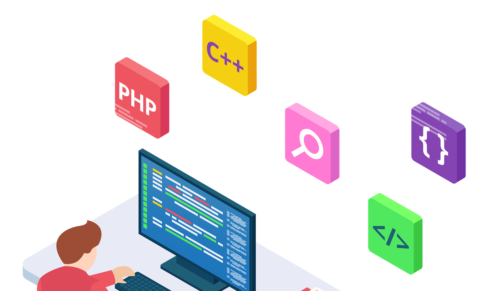

Tu mejor elección
QUIENES SOMOS
| TS Administración de Sistemas
Informáticos en RED (ASIR) |
TS Desarrollo de Aplicaciones
Multiplataforma (DAM) |
TS Desarrolo de Aplicaciones WEB
(DAW) |
|  | ||
| Con el ciclo de FP Superior en Administración de Sistemas Informáticos en Red (ASIR) serás uno de los profesionales más demandados con tu especialización en hacking ético, pentesting y otros aspectos de la ciberseguridad que dominarás. | Con el cilo de FP Superior en Multiplataforma (DAM) trabajarás en entorno web, dispositivios móviles, la nube... y con diferentes lenguajes de programación. Dominarás el proceso de diseño y las tareas de supervisión en la creación de apps. | Con el cilo de FP Superior en Desarrollo de Aplicaciones Web (DAW) trabajarás en entorno web, dispositivios móviles, la nube... y con diferentes lenguajes de programación. Dominarás el proceso de diseño y las tareas de supervisión en la creación de apps. |
|
|
|
TITULACIONES
PROFESORADO
HORARIOS
DONDE ESTAMOS